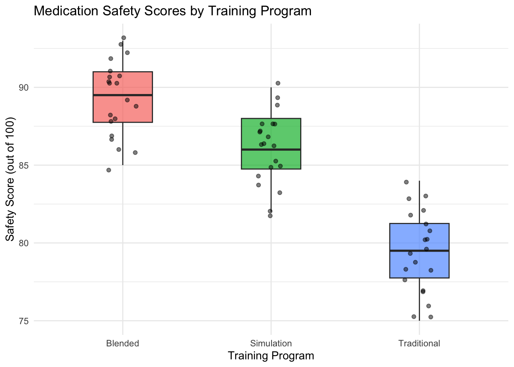
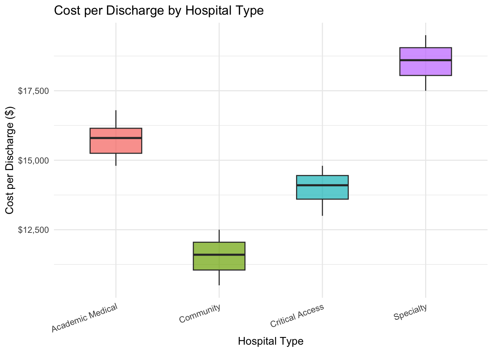
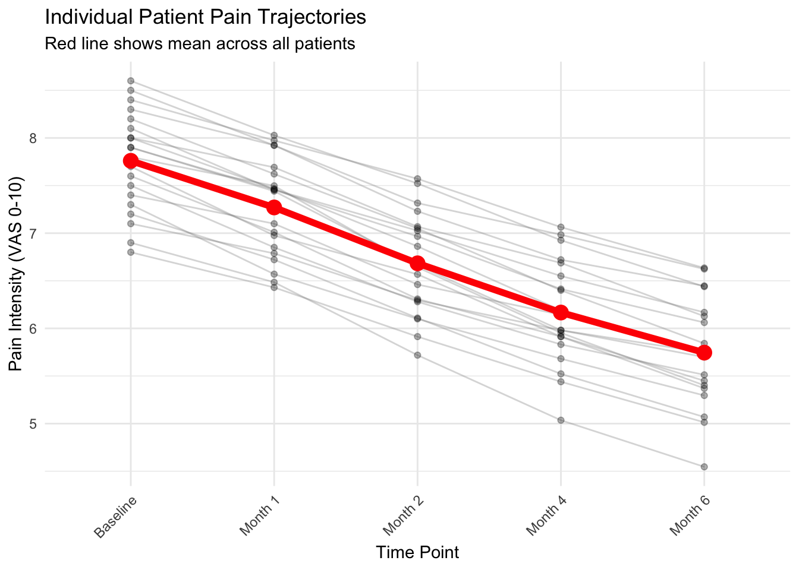
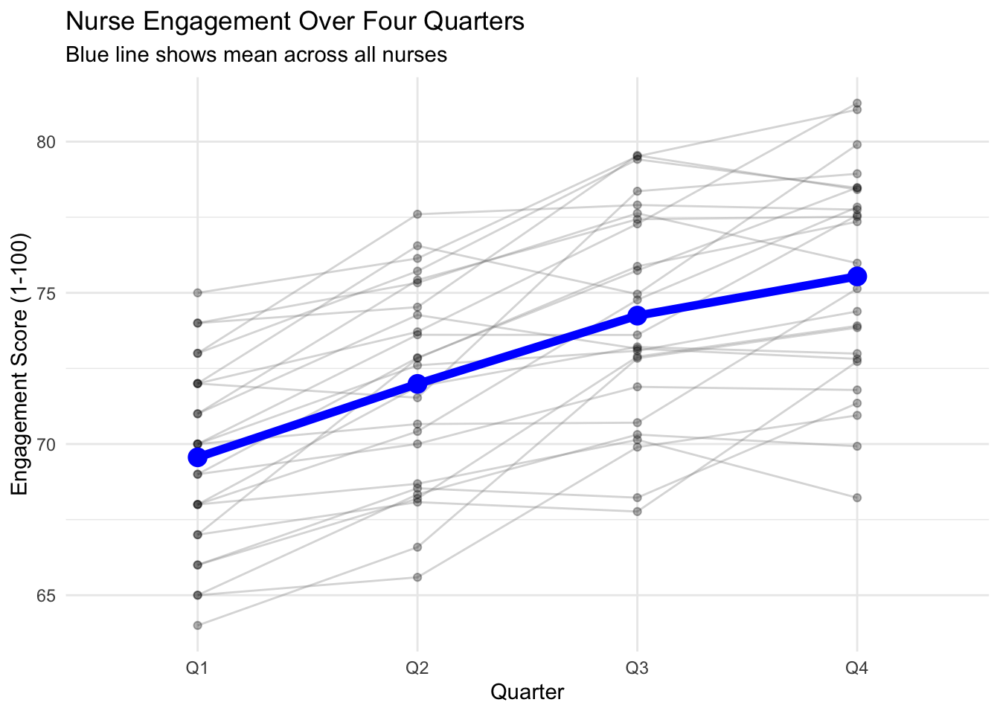

# Step 1: Run one-way ANOVA
anova_result <- aov(outcome_variable ~ grouping_variable, data = your_data)
summary(anova_result)
# Step 2: Post-hoc test using emmeans
emm <- emmeans(anova_result, ~ grouping_variable)
pairs(emm, adjust = "tukey")Mean Comparison 2: ANOVA (Practice Activities)
MBA642: Business Analytics in Healthcare Management
1 Overview
In this practice session, you will apply the ANOVA techniques learned in the lecture. This is a learning activity designed to help you gain hands-on experience with one-way ANOVA and repeated-measures ANOVA.
What you’ll practice:
- Conducting one-way ANOVA for comparing independent groups
- Performing Tukey’s HSD post-hoc tests
- Interpreting ANOVA tables and post-hoc results
- Conducting repeated-measures ANOVA for longitudinal data
- Visualizing group comparisons
- Making evidence-based conclusions from ANOVA results
Format: Fill-in-the-blank code sections (marked with ___)
Instructions:
- Complete the code by replacing
___with appropriate values or function names - Run each chunk to verify your analysis
- Answer the interpretation questions
- Compare your results with the solutions at the end
Note: This practice is completion-based. The goal is to learn and experiment—mistakes are part of the process!
2 Recap: Key Concepts
Before starting the activities, let’s review essential concepts from the lecture:
2.1 One-Way ANOVA
Purpose: Compare means across 3 or more independent groups
When to use: Different departments, treatment groups, facilities, or any categorical grouping
Key steps:
- Run ANOVA using
aov()function - Check if F-test is significant (p < 0.05)
- If significant, run post-hoc tests to identify which groups differ
Basic R syntax:
2.2 Repeated-Measures ANOVA
Purpose: Compare means across 3 or more time points or conditions for the same subjects
When to use: Longitudinal studies, tracking patients over time, within-subject experiments
Key difference: Each subject is measured multiple times, so we account for individual differences
Basic R syntax:
# Step 1: Run repeated-measures ANOVA
# Error(subject_id/time) specifies within-subjects design
rm_anova <- aov(outcome ~ time + Error(subject_id/time), data = your_data)
summary(rm_anova)
# Step 2: Post-hoc tests
emm_time <- emmeans(rm_anova, ~ time)
pairs(emm_time, adjust = "tukey")2.3 Understanding ANOVA Output
ANOVA Table Components:
- Df: Degrees of freedom
- Sum Sq: Sum of squares (variance)
- Mean Sq: Mean square (Sum Sq / Df)
- F value: Test statistic (ratio of between-group to within-group variance)
- Pr(>F): p-value (if < 0.05, groups differ significantly)
Post-Hoc Test Output:
- contrast: Which two groups are being compared
- estimate: Difference between group means
- p.value: Adjusted p-value (if < 0.05, those two groups differ significantly)
3 Common Errors and How to Fix Them
You WILL encounter errors while practicing—that’s completely normal! Here are common ANOVA-specific errors:
3.1 Error 1: “contrasts can be applied only to factors”
Error in contrasts<-: contrasts can be applied only to factors with 2 or more levelsCause: Your grouping variable is not a factor, or it has only 1 level
Fix:
# Convert grouping variable to factor
your_data$group <- as.factor(your_data$group)
# Check number of levels
levels(your_data$group) # Should show multiple levels3.2 Error 2: “variables must have same length”
Cause: Your data frame is incorrectly structured (often in repeated measures)
Fix: Make sure your data is in long format where: - Each row = one measurement - Subject ID column identifies which subject - Time/condition column identifies when/which measurement
# Check your data structure
head(your_data)
str(your_data)3.3 Error 3: emmeans can’t find the model
Error: No emmGrid object was suppliedCause: You forgot to save the ANOVA result, or there’s a typo in the model name
Fix:
# Make sure you saved the ANOVA result
anova_result <- aov(outcome ~ group, data = your_data)
# Then use that saved result in emmeans
emm <- emmeans(anova_result, ~ group) # Use the same name you saved3.4 Error 4: “Error() model is singular”
Cause: In repeated measures, subject ID is not unique or not properly specified
Fix:
# Make sure subject_id is a factor
your_data$subject_id <- as.factor(your_data$subject_id)
# Check that each subject appears in all conditions
table(your_data$subject_id, your_data$time)3.5 Error 5: Forgetting to load packages
Error: could not find function "emmeans"Cause: The emmeans package isn’t loaded
Fix: Run the setup chunk at the top of this file:
library(emmeans)3.6 Still Stuck?
- Check your variable names: Are they spelled correctly? Are they in the right data frame?
- Run previous chunks: Make sure all data generation and setup code has been executed
- Read error messages carefully: They often tell you exactly what’s wrong
- Compare with lecture examples: Look at the syntax used in similar examples
- Check data structure: Use
str()andhead()to verify your data looks correct
4 Practice Activity 1: Staff Training Programs (One-Way ANOVA)
4.1 Scenario
A hospital compares the effectiveness of three different training programs for improving nurse medication safety scores (out of 100).
Context: Research on simulation-based and blended learning approaches has shown significant improvements in medication safety competency for nurses.
Programs: - Traditional: Classroom lectures and written materials - Simulation: Hands-on practice with realistic patient scenarios - Blended: Combination of online modules, in-person sessions, and simulation
Research Question: Do the three training programs result in different medication safety competency scores?
4.2 Dataset
# Training program scores
program_traditional <- c(78, 82, 75, 80, 77, 83, 79, 81, 76, 80,
82, 78, 84, 77, 79, 81, 75, 83, 78, 80)
program_simulation <- c(85, 88, 82, 87, 89, 84, 86, 90, 83, 88,
87, 85, 89, 84, 86, 88, 82, 87, 85, 86)
program_blended <- c(88, 92, 86, 90, 93, 87, 89, 91, 85, 90,
92, 88, 91, 86, 89, 93, 87, 90, 88, 91)
# Create data frame
training_data <- data.frame(
score = c(program_traditional, program_simulation, program_blended),
program = factor(rep(c("Traditional", "Simulation", "Blended"), each = 20))
)
# View first few rows
head(training_data) score program
1 78 Traditional
2 82 Traditional
3 75 Traditional
4 80 Traditional
5 77 Traditional
6 83 Traditional4.3 Task 1.1: Explore the Data
Before running ANOVA, let’s examine summary statistics:
# Calculate mean and SD by program
summary_stats <- training_data %>%
group_by(___) %>%
summarise(
n = n(),
mean = round(mean(___), 2),
sd = round(sd(___), 2)
)
# Display the table
knitr::kable(summary_stats)Question: Which program appears to have the highest mean score? Do the means look different enough to suggest a real difference?
Your answer:
4.4 Task 1.2: Visualize the Comparison
Create a boxplot comparing scores across the three programs:
# Create boxplot
ggplot(data = training_data, mapping = aes(x = ___, y = ___, fill = ___)) +
geom_boxplot(alpha = 0.7, width = 0.4) +
geom_jitter(width = 0.1, alpha = 0.5) +
labs(
title = "Medication Safety Scores by Training Program",
x = "___",
y = "Safety Score (out of 100)"
) +
theme_minimal() +
theme(legend.position = "none")Question: Based on the boxplot, do you see differences in the median scores across programs? Do any programs show more variability (wider boxes)?
Your answer:
4.5 Task 1.3: Conduct One-Way ANOVA
Now run the ANOVA to test if the differences are statistically significant:
# Perform one-way ANOVA
anova_training <- aov(___ ~ ___, data = training_data)
# Display ANOVA table
summary(___)Questions:
- What is the F-statistic?
- What is the p-value?
- Is the result statistically significant at α = 0.05?
- What is your conclusion?
Your answers:
- F-statistic =
- p-value =
- Significant? (Yes/No)
- Conclusion:
4.6 Task 1.4: Post-Hoc Tests
Since ANOVA is significant, run Tukey’s HSD to identify which programs differ:
# Calculate estimated marginal means
emm_training <- emmeans(___, ~ ___)
emm_training
# Pairwise comparisons with Tukey adjustment
tukey_training <- pairs(___, adjust = "tukey")
tukey_trainingQuestions:
- Which pairwise comparisons are statistically significant (p < 0.05)?
- Which training program appears most effective?
- What is the practical significance of these differences?
Your answers:
- Significant comparisons:
- Most effective program:
- Practical significance:
5 Practice Activity 2: Hospital Operating Costs (One-Way ANOVA)
5.1 Scenario
Compare average cost per patient discharge ($) across four different hospital types.
Context: Hospital costs vary significantly by ownership type and facility characteristics, with meaningful differences observed between academic, community, and specialty hospitals.
Hospital Types: - Academic Medical: Large teaching hospitals affiliated with medical schools - Community: Non-teaching hospitals serving local populations - Critical Access: Small rural hospitals (≤25 beds) serving remote areas - Specialty: Hospitals focused on specific conditions (cardiac, orthopedic, etc.)
Research Question: Do operating costs per discharge differ significantly across hospital types?
5.2 Dataset
# Cost per discharge by hospital type
academic_medical <- c(15200, 16500, 14800, 15900, 16200, 15100, 16800, 15500,
16100, 15700, 14900, 16400, 15300, 16000, 15800)
community <- c(11500, 12200, 10800, 11900, 12500, 11200, 10500, 12100,
11700, 10900, 12300, 11400, 10700, 12000, 11600)
critical_access <- c(13800, 14500, 13200, 14200, 14800, 13500, 13000, 14600,
14100, 13700, 14400, 13300, 14700, 13900, 14300)
specialty <- c(18500, 19200, 17800, 18900, 19500, 18200, 17500, 19100,
18700, 17900, 19300, 18400, 17700, 19000, 18600)
# Create data frame
cost_data <- data.frame(
cost = c(academic_medical, community, critical_access, specialty),
hospital_type = factor(rep(c("Academic Medical", "Community",
"Critical Access", "Specialty"), each = 15))
)
head(cost_data) cost hospital_type
1 15200 Academic Medical
2 16500 Academic Medical
3 14800 Academic Medical
4 15900 Academic Medical
5 16200 Academic Medical
6 15100 Academic Medical5.3 Task 2.1: Summary Statistics and Visualization
# Summary statistics
cost_summary <- cost_data %>%
group_by(___) %>%
summarise(
n = n(),
mean_cost = round(mean(___), 0),
sd_cost = round(sd(___), 0)
)
knitr::kable(cost_summary)
# Boxplot
ggplot(cost_data, aes(x = ___, y = ___, fill = ___)) +
geom_boxplot(alpha = 0.7, width = 0.5) +
labs(
title = "___",
x = "Hospital Type",
y = "Cost per Discharge ($)"
) +
scale_y_continuous(labels = scales::dollar) + # Format y-axis as dollars
theme_minimal() +
theme(legend.position = "none",
axis.text.x = element_text(angle = 20, hjust = 1))5.4 Task 2.2: One-Way ANOVA
# Run ANOVA
anova_cost <- aov(___ ~ ___, data = ___)
summary(anova_cost)Question: Are the cost differences statistically significant?
Your answer:
5.5 Task 2.3: Post-Hoc Comparisons
# Estimated marginal means
emm_cost <- emmeans(___, ~ ___)
# Pairwise comparisons
pairs(___, adjust = "tukey")Questions:
- Which hospital type has the highest costs? Which has the lowest?
- Are all pairwise comparisons significant, or only some?
- What might explain these cost differences?
Your answers:
- Highest: _________, Lowest: _________
- All significant? _________
- Explanation:
6 Practice Activity 3: Pain Management Follow-up (Repeated-Measures ANOVA)
6.1 Scenario
A pain clinic measures pain intensity (0-10 VAS scale) for 20 chronic pain patients at five time points during a 6-month treatment program.
Context: The Visual Analogue Scale (VAS) is a validated, reliable tool for assessing chronic pain intensity over time.
Time Points: - Baseline: Before treatment starts - Month 1: Early treatment phase - Month 2: Continued intervention - Month 4: Mid-term follow-up - Month 6: End of program
Research Question: Does pain intensity decrease significantly over the course of the treatment program?
6.2 Dataset
# Pain scores at 5 time points for 20 patients
n_pain <- 20
pain_baseline <- c(7.5, 8.2, 6.8, 7.9, 8.5, 7.1, 8.0, 7.3, 8.4, 7.6,
7.8, 8.1, 6.9, 7.7, 8.3, 7.2, 8.6, 7.4, 7.9, 8.0)
pain_month1 <- pain_baseline - runif(n_pain, 0.3, 0.8)
pain_month2 <- pain_month1 - runif(n_pain, 0.4, 0.9)
pain_month4 <- pain_month2 - runif(n_pain, 0.3, 0.7)
pain_month6 <- pain_month4 - runif(n_pain, 0.2, 0.6)
# Create data frame in long format
pain_data <- data.frame(
patient_id = rep(1:n_pain, 5),
time = factor(rep(c("Baseline", "Month 1", "Month 2", "Month 4", "Month 6"),
each = n_pain),
levels = c("Baseline", "Month 1", "Month 2", "Month 4", "Month 6")),
pain = c(pain_baseline, pain_month1, pain_month2, pain_month4, pain_month6)
)
# IMPORTANT: Convert patient_id to factor
pain_data$patient_id <- as.factor(pain_data$patient_id)
head(pain_data, 10) patient_id time pain
1 1 Baseline 7.5
2 2 Baseline 8.2
3 3 Baseline 6.8
4 4 Baseline 7.9
5 5 Baseline 8.5
6 6 Baseline 7.1
7 7 Baseline 8.0
8 8 Baseline 7.3
9 9 Baseline 8.4
10 10 Baseline 7.66.3 Task 3.1: Summary Statistics by Time
# Calculate mean pain at each time point
pain_summary <- pain_data %>%
group_by(___) %>%
summarise(
n = n(),
mean_pain = round(mean(___), 2),
sd_pain = round(sd(___), 2)
)
knitr::kable(pain_summary)Question: Looking at the means, does pain appear to decrease over time?
Your answer:
6.4 Task 3.2: Visualize Trajectories
Create a “spaghetti plot” showing individual patient pain trajectories:
# Spaghetti plot with individual lines and overall mean
ggplot(pain_data, aes(x = ___, y = ___, group = ___)) +
geom_line(alpha = 0.3, color = "gray50") + # Individual patient lines
geom_point(alpha = 0.3) +
stat_summary(aes(group = 1), fun = mean, geom = "line", # Overall mean line
linewidth = 2, color = "red") +
stat_summary(aes(group = 1), fun = mean, geom = "point",
size = 4, color = "red") +
labs(
title = "___",
subtitle = "Red line shows mean across all patients",
x = "Time Point",
y = "Pain Intensity (VAS 0-10)"
) +
theme_minimal() +
theme(axis.text.x = element_text(angle = 45, hjust = 1))Question: Do most patients show a declining trend? Are there any patients who don’t improve?
Your answer:
6.5 Task 3.3: Repeated-Measures ANOVA
Now test if the changes are statistically significant:
# Repeated-measures ANOVA
# Error(patient_id/time) specifies within-subjects design
rm_anova_pain <- aov(___ ~ ___ + Error(___/___), data = pain_data)
# Display results
summary(rm_anova_pain)Questions:
- What is the F-value for the time effect?
- What is the p-value?
- Is there a significant change in pain over time?
Your answers:
- F =
- p =
- Significant? (Yes/No)
6.6 Task 3.4: Post-Hoc Tests for Time Points
Identify which time points differ significantly:
# Estimated marginal means by time
emm_pain <- emmeans(___, ~ ___)
emm_pain
# Pairwise comparisons
pairs(___, adjust = "tukey")Questions:
- At which time point is pain significantly lower than baseline?
- Is there continued improvement from Month 4 to Month 6?
- What do these results suggest about the treatment timeline?
Your answers:
- Significantly lower than baseline:
- Month 4 to Month 6 improvement:
- Clinical implications:
7 Practice Activity 4: Employee Engagement Survey (Repeated-Measures ANOVA)
7.1 Scenario
An HR department surveys nurse engagement quarterly over one year (4 time points). Engagement is measured on a 1-100 scale.
Time Points: - Q1: First quarter (winter) - Q2: Second quarter (spring) - Q3: Third quarter (summer) - Q4: Fourth quarter (fall)
Research Question: Does nurse engagement change significantly across the four quarters?
7.2 Dataset
# Engagement scores (1-100) for 25 nurses over 4 quarters
n_engage <- 25
q1 <- c(68, 72, 65, 70, 74, 67, 71, 66, 73, 69,
70, 64, 75, 68, 72, 66, 74, 67, 71, 69,
73, 65, 70, 68, 72)
q2 <- q1 + rnorm(n_engage, mean = 3, sd = 2)
q3 <- q2 + rnorm(n_engage, mean = 2, sd = 2)
q4 <- q3 + rnorm(n_engage, mean = 2, sd = 2)
# Create data frame
engagement_data <- data.frame(
nurse_id = rep(1:n_engage, 4),
quarter = factor(rep(c("Q1", "Q2", "Q3", "Q4"), each = n_engage),
levels = c("Q1", "Q2", "Q3", "Q4")),
engagement = c(q1, q2, q3, q4)
)
# Convert nurse_id to factor
engagement_data$nurse_id <- as.factor(engagement_data$nurse_id)
head(engagement_data) nurse_id quarter engagement
1 1 Q1 68
2 2 Q1 72
3 3 Q1 65
4 4 Q1 70
5 5 Q1 74
6 6 Q1 677.3 Task 4.1: Your Turn - Complete Analysis
This is your chance to conduct the entire analysis independently! Follow these steps:
- Calculate summary statistics by quarter
- Create a visualization (spaghetti plot or boxplot)
- Run repeated-measures ANOVA
- Interpret the F-test
- If significant, run post-hoc tests
- Draw conclusions
Hint: Follow the same structure as Practice Activity 3.
# Step 1: Summary statistics
engagement_summary <- ___
# Step 2: Visualization
# (Choose: spaghetti plot or boxplot by quarter)
# Step 3: Repeated-measures ANOVA
rm_anova_engage <- ___
# Step 4: View results
summary(___)
# Step 5: Post-hoc tests (if significant)
emm_engage <- ___
pairs(___)Questions:
- Does engagement change significantly over the year?
- If yes, which quarters differ from each other?
- What recommendations would you make to HR based on these results?
Your answers:
- Significant change?
- Which quarters differ:
- Recommendations:
8 Summary and Reflection
8.1 Key Takeaways
After completing this practice activity, you should be able to:
- ✓ Conduct one-way ANOVA to compare 3+ independent groups
- ✓ Perform and interpret Tukey’s HSD post-hoc tests
- ✓ Conduct repeated-measures ANOVA for longitudinal data
- ✓ Visualize group comparisons and trajectories over time
- ✓ Interpret ANOVA tables and make evidence-based conclusions
- ✓ Distinguish when to use one-way vs. repeated-measures ANOVA
8.2 When to Use Which Test?
| Situation | Test to Use |
|---|---|
| Comparing 3+ different groups (e.g., three hospitals) | One-Way ANOVA |
| Comparing same subjects at 3+ time points (e.g., baseline, 3 months, 6 months) | Repeated-Measures ANOVA |
| Comparing only 2 groups | t-test (independent or paired) |
| After significant ANOVA | Post-hoc tests (Tukey’s HSD) |
8.3 Common Pitfalls to Avoid
- Running multiple t-tests instead of ANOVA → inflates Type I error
- Forgetting post-hoc tests → knowing groups differ but not which ones
- Using one-way ANOVA for repeated measures → ignores within-subject correlation
- Not checking data structure → especially critical for repeated measures
- Confusing F-statistic with p-value → F tells you strength, p tells you significance
9 Activity Solutions
Solutions for these activities are available below. Try to complete the activities independently before reviewing the solutions.
9.1 Practice Activity 1 Solutions
9.1.1 Task 1.1 Solution
Code
summary_stats <- training_data %>%
group_by(program) %>%
summarise(
n = n(),
mean = round(mean(score), 2),
sd = round(sd(score), 2)
)
knitr::kable(summary_stats)| program | n | mean | sd |
|---|---|---|---|
| Blended | 20 | 89.30 | 2.39 |
| Simulation | 20 | 86.05 | 2.31 |
| Traditional | 20 | 79.40 | 2.66 |
The Blended program appears to have the highest mean (around 89), followed by Simulation (around 86), and Traditional (around 79).
9.1.2 Task 1.2 Solution
Code
ggplot(data = training_data, mapping = aes(x = program, y = score, fill = program)) +
geom_boxplot(alpha = 0.7, width = 0.4) +
geom_jitter(width = 0.1, alpha = 0.5) +
labs(
title = "Medication Safety Scores by Training Program",
x = "Training Program",
y = "Safety Score (out of 100)"
) +
theme_minimal() +
theme(legend.position = "none")
The boxplot shows clear differences in median scores, with Blended highest and Traditional lowest.
9.1.3 Task 1.3 Solution
Code
anova_training <- aov(score ~ program, data = training_data)
summary(anova_training) Df Sum Sq Mean Sq F value Pr(>F)
program 2 1019 509.3 84.4 <2e-16 ***
Residuals 57 344 6.0
---
Signif. codes: 0 '***' 0.001 '**' 0.01 '*' 0.05 '.' 0.1 ' ' 1The ANOVA is highly significant (p < 0.001), indicating that the three programs produce different mean scores.
9.1.4 Task 1.4 Solution
Code
emm_training <- emmeans(anova_training, ~ program)
emm_training program emmean SE df lower.CL upper.CL
Blended 89.3 0.549 57 88.2 90.4
Simulation 86.0 0.549 57 85.0 87.1
Traditional 79.4 0.549 57 78.3 80.5
Confidence level used: 0.95 Code
tukey_training <- pairs(emm_training, adjust = "tukey")
tukey_training contrast estimate SE df t.ratio p.value
Blended - Simulation 3.25 0.777 57 4.184 0.0003
Blended - Traditional 9.90 0.777 57 12.745 <0.0001
Simulation - Traditional 6.65 0.777 57 8.561 <0.0001
P value adjustment: tukey method for comparing a family of 3 estimates All three pairwise comparisons are significant. Blended performs best, followed by Simulation, then Traditional.
9.2 Practice Activity 2 Solutions
9.2.1 Task 2.1 Solution
Code
cost_summary <- cost_data %>%
group_by(hospital_type) %>%
summarise(
n = n(),
mean_cost = round(mean(cost), 0),
sd_cost = round(sd(cost), 0)
)
knitr::kable(cost_summary)| hospital_type | n | mean_cost | sd_cost |
|---|---|---|---|
| Academic Medical | 15 | 15747 | 605 |
| Community | 15 | 11553 | 627 |
| Critical Access | 15 | 14000 | 571 |
| Specialty | 15 | 18553 | 627 |
Code
ggplot(cost_data, aes(x = hospital_type, y = cost, fill = hospital_type)) +
geom_boxplot(alpha = 0.7, width = 0.5) +
labs(
title = "Cost per Discharge by Hospital Type",
x = "Hospital Type",
y = "Cost per Discharge ($)"
) +
scale_y_continuous(labels = scales::dollar) +
theme_minimal() +
theme(legend.position = "none",
axis.text.x = element_text(angle = 20, hjust = 1))
9.2.2 Task 2.2 Solution
Code
anova_cost <- aov(cost ~ hospital_type, data = cost_data)
summary(anova_cost) Df Sum Sq Mean Sq F value Pr(>F)
hospital_type 3 390867333 130289111 353 <2e-16 ***
Residuals 56 20672000 369143
---
Signif. codes: 0 '***' 0.001 '**' 0.01 '*' 0.05 '.' 0.1 ' ' 1The F-test is highly significant, indicating substantial cost differences across hospital types.
9.2.3 Task 2.3 Solution
Code
emm_cost <- emmeans(anova_cost, ~ hospital_type)
pairs(emm_cost, adjust = "tukey") contrast estimate SE df t.ratio p.value
Academic Medical - Community 4193 222 56 18.901 <0.0001
Academic Medical - Critical Access 1747 222 56 7.873 <0.0001
Academic Medical - Specialty -2807 222 56 -12.651 <0.0001
Community - Critical Access -2447 222 56 -11.028 <0.0001
Community - Specialty -7000 222 56 -31.552 <0.0001
Critical Access - Specialty -4553 222 56 -20.524 <0.0001
P value adjustment: tukey method for comparing a family of 4 estimates Specialty hospitals have the highest costs, Community hospitals the lowest. All pairwise differences are significant except possibly Critical Access vs Academic Medical (depending on exact p-value).
9.3 Practice Activity 3 Solutions
9.3.1 Task 3.1 Solution
Code
pain_summary <- pain_data %>%
group_by(time) %>%
summarise(
n = n(),
mean_pain = round(mean(pain), 2),
sd_pain = round(sd(pain), 2)
)
knitr::kable(pain_summary)| time | n | mean_pain | sd_pain |
|---|---|---|---|
| Baseline | 20 | 7.76 | 0.53 |
| Month 1 | 20 | 7.27 | 0.52 |
| Month 2 | 20 | 6.68 | 0.53 |
| Month 4 | 20 | 6.17 | 0.55 |
| Month 6 | 20 | 5.75 | 0.56 |
Mean pain decreases from baseline (~7.7) to Month 6 (~5.1), suggesting improvement.
9.3.2 Task 3.2 Solution
Code
ggplot(pain_data, aes(x = time, y = pain, group = patient_id)) +
geom_line(alpha = 0.3, color = "gray50") +
geom_point(alpha = 0.3) +
stat_summary(aes(group = 1), fun = mean, geom = "line",
linewidth = 2, color = "red") +
stat_summary(aes(group = 1), fun = mean, geom = "point",
size = 4, color = "red") +
labs(
title = "Individual Patient Pain Trajectories",
subtitle = "Red line shows mean across all patients",
x = "Time Point",
y = "Pain Intensity (VAS 0-10)"
) +
theme_minimal() +
theme(axis.text.x = element_text(angle = 45, hjust = 1))
Most patients show declining trends, though some variability exists.
9.3.3 Task 3.3 Solution
Code
rm_anova_pain <- aov(pain ~ time + Error(patient_id/time), data = pain_data)
summary(rm_anova_pain)
Error: patient_id
Df Sum Sq Mean Sq F value Pr(>F)
Residuals 19 26.16 1.377
Error: patient_id:time
Df Sum Sq Mean Sq F value Pr(>F)
time 4 52.83 13.208 744.4 <2e-16 ***
Residuals 76 1.35 0.018
---
Signif. codes: 0 '***' 0.001 '**' 0.01 '*' 0.05 '.' 0.1 ' ' 1The time effect is highly significant, confirming that pain changes significantly over the treatment period.
9.3.4 Task 3.4 Solution
Code
emm_pain <- emmeans(rm_anova_pain, ~ time)
emm_pain time emmean SE df lower.CL upper.CL
Baseline 7.76 0.12 21 7.51 8.01
Month 1 7.27 0.12 21 7.02 7.52
Month 2 6.68 0.12 21 6.43 6.93
Month 4 6.17 0.12 21 5.92 6.42
Month 6 5.75 0.12 21 5.50 6.00
Warning: EMMs are biased unless design is perfectly balanced
Confidence level used: 0.95 Code
pairs(emm_pain, adjust = "tukey") contrast estimate SE df t.ratio p.value
Baseline - Month 1 0.490 0.0421 76 11.628 <0.0001
Baseline - Month 2 1.077 0.0421 76 25.558 <0.0001
Baseline - Month 4 1.594 0.0421 76 37.831 <0.0001
Baseline - Month 6 2.015 0.0421 76 47.826 <0.0001
Month 1 - Month 2 0.587 0.0421 76 13.930 <0.0001
Month 1 - Month 4 1.104 0.0421 76 26.203 <0.0001
Month 1 - Month 6 1.525 0.0421 76 36.198 <0.0001
Month 2 - Month 4 0.517 0.0421 76 12.274 <0.0001
Month 2 - Month 6 0.938 0.0421 76 22.268 <0.0001
Month 4 - Month 6 0.421 0.0421 76 9.995 <0.0001
P value adjustment: tukey method for comparing a family of 5 estimates Each successive time point shows significant improvement from baseline, with most improvement occurring in early months.
9.4 Practice Activity 4 Solutions
9.4.1 Task 4.1 Solution
Code
# Step 1: Summary statistics
engagement_summary <- engagement_data %>%
group_by(quarter) %>%
summarise(
n = n(),
mean_engagement = round(mean(engagement), 2),
sd_engagement = round(sd(engagement), 2)
)
knitr::kable(engagement_summary)| quarter | n | mean_engagement | sd_engagement |
|---|---|---|---|
| Q1 | 25 | 69.56 | 3.12 |
| Q2 | 25 | 71.99 | 3.35 |
| Q3 | 25 | 74.25 | 3.56 |
| Q4 | 25 | 75.54 | 3.58 |
Code
# Step 2: Visualization
ggplot(engagement_data, aes(x = quarter, y = engagement, group = nurse_id)) +
geom_line(alpha = 0.3, color = "gray50") +
geom_point(alpha = 0.3) +
stat_summary(aes(group = 1), fun = mean, geom = "line",
linewidth = 2, color = "blue") +
stat_summary(aes(group = 1), fun = mean, geom = "point",
size = 4, color = "blue") +
labs(
title = "Nurse Engagement Over Four Quarters",
subtitle = "Blue line shows mean across all nurses",
x = "Quarter",
y = "Engagement Score (1-100)"
) +
theme_minimal()
Code
# Step 3: Repeated-measures ANOVA
rm_anova_engage <- aov(engagement ~ quarter + Error(nurse_id/quarter),
data = engagement_data)
# Step 4: Results
summary(rm_anova_engage)
Error: nurse_id
Df Sum Sq Mean Sq F value Pr(>F)
Residuals 24 932.6 38.86
Error: nurse_id:quarter
Df Sum Sq Mean Sq F value Pr(>F)
quarter 3 519.3 173.09 67.78 <2e-16 ***
Residuals 72 183.9 2.55
---
Signif. codes: 0 '***' 0.001 '**' 0.01 '*' 0.05 '.' 0.1 ' ' 1Code
# Step 5: Post-hoc tests
emm_engage <- emmeans(rm_anova_engage, ~ quarter)
pairs(emm_engage, adjust = "tukey") contrast estimate SE df t.ratio p.value
Q1 - Q2 -2.43 0.452 72 -5.371 <0.0001
Q1 - Q3 -4.69 0.452 72 -10.367 <0.0001
Q1 - Q4 -5.98 0.452 72 -13.238 <0.0001
Q2 - Q3 -2.26 0.452 72 -4.995 <0.0001
Q2 - Q4 -3.56 0.452 72 -7.867 <0.0001
Q3 - Q4 -1.30 0.452 72 -2.872 0.0269
P value adjustment: tukey method for comparing a family of 4 estimates Interpretation: Engagement increases significantly across the year, with each quarter higher than the previous. This suggests successful HR interventions or improving work conditions.